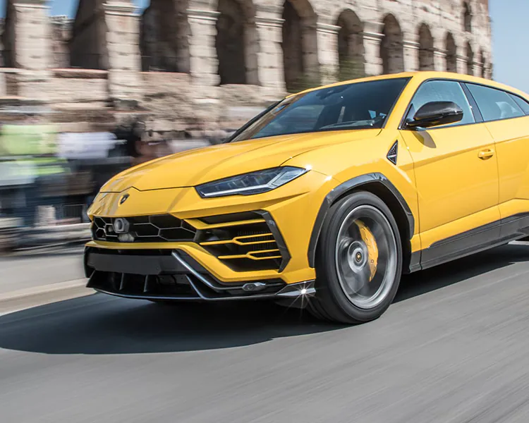

На цьому сайті буде 2 машині рінзі буде порівняння, характеристика, зображення і так дальше.
З початку січня 2014 року, Huracan була представлена на 130 закритих заходах, які пройшли в 60 містах.
Світова прем'єра відбулася на
Женевському автосалоні в березні
2014 року. Модель отримала назву «Huracan»,
яке за традицією італійського виробника
пов'язано зі світом кориди: таке ім'я
носив бойовий бик, який виступав в
іспанському місті Аліканте в 1879 році[1].
Середньо-моторний повнопривідний суперкар, базується на карбоново-алюмінієвому шасі,
котре лягло в основу другого покоління Audi R8. Вага авто 1,422 кілограми, що на 12 важча
ніж Gallardo. Співвідношення ваги до потужності складає 2,33 кг на кінську силу.
Суперкар оснащено модернізованим V10 об'ємом 5,2 літра від Gallardo.
Потужність — 610 к.с. (455 кВт) при 8 250 обертах за хвилину,
та 650 Нм крутного моменту при 6 500 обертах за хвилину.
Розгін до 100 складає 3,2 секунди, до 200 — 9,6 секунди,
а максимальна швидкість рівняється 325-ти кілометрам за годину.
Середня витрата палива складає 12,5 літра на сотню пробігу.
Двигун працює в парі з роботизованою 7-ступеневою коробкою
передач з подвійним зчепленням, яка отримала назву Lamborghini Doppia Frizione (LDF),
це є модернізований варіант трансмісії S-tronic, яке використовується на першому поколінні Audi R8[2].

Концепт-кар автомобіля був показаний у 2012 році на Пекінському автосалоні.[1] Серійна версія буде
збиратися в м. Братислава на заводі Volkswagen Bratislava Plant, поруч з Volkswagen Touareg, Audi Q7,
Porsche Cayenne, Bentley Bentayga[2].За давньою традицією, назва кожної нової моделі Lamborghini
запозичується зі світу бойових биків. Urus, також відомий як "тур" або "первісний бик", є одним з
найбільших представників диких предків цих домашніх тварин.
4 грудня 2017 року офіційно презентовано серійну модель Lamborghini Urus. Навесні 2018 року почнуться
продажі автомобіля.
Довжина авто складає 5,112 мм, ширина — 2,016 мм, висота — 1,638 мм.
Серійна версія авто, збудована на платформі VW MLB evo, отримала модифікований 4,0 літровий V8 з
безпосереднім впорскуванням палива з парою турбонагнітачів типу Twin Scroll в розвалі блоку.
Потужність такого двигуна буде складати 650 к.с. (477 кВт) 850 Нм. Двигун спарений з восьмиступінчастою
АКПП і повним приводом на основі самоблокованого міжосьового диференціала Torsen. У нормі розподіл
тяги між передньою і задньою осями складає 40:60, але при необхідності вперед може бути переправлено
до 70 % моменту, а тому — до 87 %. В результаті кроссовер з набивною масою 2155 кг розганяється від
0 до 100 км/год за 3,6 с при максимальній швидкості 305 км/год.
Urus має меншу вагу в порівнянні з конкурентами. Для зниження маси інженери використовували
різні легкі матеріали. У салоні також використані легкі композити. Завдяки легкій конструкції,
авто витрачає менше палива, має високу динаміку і керованість. На бездоріжжі вона сприяє поліпшенню
геометричній прохідності, а на трасі підвищує стабільність руху на високих швидкостях
Автомобіль 4-ох місний, сидіння в серійній версії будуть такі самі як у Audi A7.
Елементи декору на центральному тунелі, зроблені за технологією високих швидкостей Forged Composite,
завдяки цьому видно структуру волокон вугле-пластика. За кермом встановлені статичні підрульові перемикачі
для управління коробкою передач з подвійним зчепленням, а всіма іншими функціями, такими як покажчики
поворотів, вимикачі фар і склоочисників, можна керувати за допомогою програмованих клавіш на кермовому
колесі або через дисплей на центральній консолі. Туди виводиться вся додаткова інформація про навігацію,
мультимедіа і клімат-контроль[3].